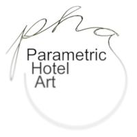

Hello, I am David Lobser, president of Parametric Hotel Art or PHA. Come with me as I take you through a journey into art
and hotels.
It was nearly one hundred years that Picasso and
Braque discovered cubism, a procedural way of fragmenting the
image plane. At the time such experimentation was considered ugly and
disturbing, but over the course of the next half century the ideas
were developed to the point of being merely another decorative style.
We at generative hotel art understand the importance of decor and it's
impact on the paying customer. Good hotel art should be inoffensive, soothing, sophisticated and beautiful. Most
hotels rely on prints of master works from previous centuries. At PHA
we understand how your patrons think. A one of a kind hand painted
piece says money and power in ways that mere prints cannot.
We use sophisticated computer technology to deconstruct the rules of
various schools of abstract art and have come up with a method for
inventing new, virtual artists. These artists will spend an evening
generating hundreds or thousands of works which our experts choose the
best. The designs use algorithms which can produce imagery that
humans are well attuned to appreciating. The aspects of this work
include repetition on different scales, rhythmic alternations, and
fluid, graceful strokes. These are then sent to our factory where
they are painted by machines of loving grace.
We sell our paintings by the pound, please contact us for a custom quote.